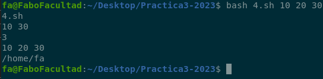
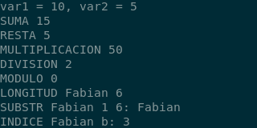
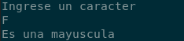
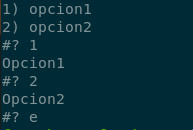
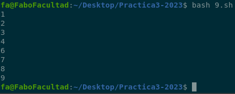
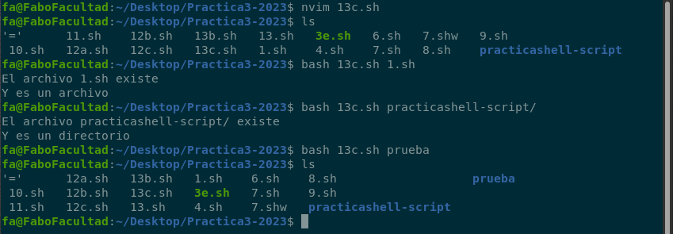
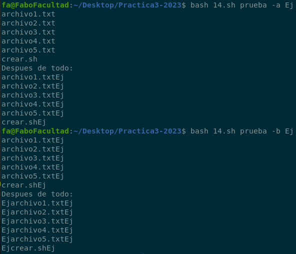

📚 Practica 3
- 1) ¿Qué es el Shell Scripting? ¿A qué tipos de tareas están orientados los script?
- 2) Investigar la funcionalidad de los comandos echo y read
- 3) Crear dentro del directorio personal del usuario logueado un directorio
- 4) Parametrización
- 5) ¿Cual es la funcionalidad de comando exit?
- 6) El comando expr permite la evaluación de expresiones
- 7) El comando “test expresión” permite evaluar expresiones
- 8) Estructuras de control
- 9) ¿Qué acciones realizan las sentencias break y continue dentro de un bucle?
- 10) ¿Qué tipo de variables existen? ¿Es shell script fuertemente tipado?
- 11) ¿Pueden definirse funciones dentro de un script? ¿Cómo?
- 12) Evaluación de expresiones
- 13) Uso de las estructuras de control
- 14) Renombrando Archivos: haga un script que renombre solo archivos
- 15) Comando cut
- 16) Realizar un script que reciba como parámetro una extensión
- 17) Escribir un script que al ejecutarse imprima en pantalla los nombre
- 18) Crear un script que verifique cada 10 segundos si un usuario se ha
- 19) Escribir un Programa de “Menu de Comandos Amigable con el Usuario”
- 20) Realice un script que simule el comportamiento de una estructura de PILA
- 21) Dentro del mismo script y utilizando las funciones implementadas
- 22) Dada la siguiente declaración al comienzo de un script
- 23) Implemente un script que recorra un arreglo compuesto por números
- 24) Dada la definición de 2 vectores del mismo tamaño y cuyas
- 25) Realice un script que agregue en un arreglo todos los nombres
- 26) Escriba un script que reciba una cantidad desconocida de parámetros
- 27) Realice un script que implemente a través de la utilización
- 28) Realice un script que reciba como parámetro el nombre de un directorio
- 29) Implemente un script que agregue a un arreglo todos los archivos
- 30) Realice un script que mueva todos los programas del directorio actual
1) Ejercicio
¿Qué es el Shell Scripting? ¿A qué tipos de tareas están orientados los script? ¿Los scripts deben compilarse? ¿Por qué?
La Shell provee estructuras de control que permiten programar shell scripts.
El Shell Scripting es la técnica (habilidad / destreza) de diseñar y crear Script (archivo de automatización de tareas) mediante un Shell (preferiblemente) de un Sistema Operativo, o un
Editor de Texto (Gráfico o Terminal). Este es un tipo de lenguaje de programación que generalmente es interpretado.
Está orientado a diferentes tareas:
- Automatización de tareas
- Aplicaciones interactivas
- Aplicaciones con interfaz gráfica (con el comando zenity, por ejemplo).
2) Ejercicio
Investigar la funcionalidad de los comandos echo y read
Echo:Es un comando para la impresión de un texto en pantalla. El comando para imprimir el contenido de la variable es:echo $nombreVarRead:El comando read lee su entrada estándar y asigna las palabras leídas en la(s) variable(s) cuyo nombre se pasa como argumento. Se trata del input desde teclado.

(a) ¿Como se indican los comentarios dentro de un script?
Los comentarios tienen que comenzar con el símbolo #
(b) ¿Cómo se declaran y se hace referencia a variables dentro de un script?
No necesita declarar una variable. Se creará sólo con asignarle un valor a su referencia. Luego se referencia con el símbolo $ Ejemplo
Para hacer un script:
Paso 1en la consola usar el comando:touch script.shpara crear el directorio.Paso 2Ver si se creo el directorio con el comandolsPaso 3Ingresar al archivoscript.shcon el editor de texto vi de la siguiente maneravim script.sh- DENTRO DEL EDITOR VIM:
- Ingresar la letra i para estar en modo insertar y Escribir
#!/bin/bash CAD="¡Hola Mundo!" echo $CAD
ESC(para salir del modo editor):wq(para guardar los cambios)- Salimos del editor vi e ingresamos a la consola
Paso 4:Damos permiso de ejecución con el comando:chmod u+x script.sh- Si ponemos el comando ls vamos a ver que el directorio .sh cambio de color.
Paso 5:Con el comando./script.shvamos a ver el contenido de ese script en cosola.Paso 6:Si queremos borrar ese directorio con script solo es necesario poner en consola el comandorm script.sh
Tambien podes ejecutar el script con el comando bash script.sh
3) Ejercicio
Crear dentro del directorio personal del usuario logueado un directorio llamado practicashell-script y dentro de él un archivo llamado mostrar.sh cuyo contenido sea el siguiente:
#!/bin/bash # Comentarios acerca de lo que hace el script # Siempre comento mis scripts, si no hoy lo hago # y mañana ya no me acuerdo de lo que quise hacer echo "Introduzca su nombre y apellido:" read nombre apellido echo "Fecha y hora actual:" date echo "Su apellido y nombre es:" echo "$apellido $nombre" echo "Su usuario es: `whoami`" echo "Su directorio actual es:" |
|

(a) Asignar al archivo creado los permisos necesarios de manera que pueda ejecutarlo
(b) Ejecutar el archivo creado de la siguiente manera: ./mostrar
(c) ¿Qué resultado visualiza?

(d) Las backquotes (`) entre el comando whoami ilustran el uso de la sustitución de comandos. ¿Qué significa esto?
Son para poder ejecutar comando cuando se encuentran dentro de un string
(e) Realizar modificaciones al script anteriormente creado de manera de poder mostrar distintos resultados (cuál es su directorio personal, el contenido de un directorio en particular, el espacio libre en disco, etc.). Pida que se introduzcan por teclado (entrada estándar) otros datos.
#!/bin/bash echo "Nombre y apellido" read nombre apellido echo "Fecha y hora actual: `date`" echo $nombre $apellido echo "Su usuario es: `whoami`" echo "su directorio actual es :`pwd`" echo "su directorio personal es : `$HOME`" echo "Nombre de un directorio:" echo contenido echo "Contenido de $contenido es `ls $contenido`" echo "Espacio libre en el disco `df`" |
|

4) Ejercicio
Parametrización: ¿Cómo se acceden a los parámetros enviados al script al momento de su invocación? ¿Qué información contienen las variables $#, $*, $? y $HOME dentro de un script?
- Los scripts pueden recibir argumentos en su invocación. Para accederlos, se utilizan variables especiales:
$0contiene la invocación al script. (nombre del script)$1, $2, $3,...contienen cada uno de los argumentos.$#contiene la cantidad de argumentos recibidos.$*contiene la lista de todos los argumentos separados por espacios.$?contiene en todo momento el valor de retorno del ultimo comando ejecutado.(si el valor es 0 se ejecuto correctamente, en caso de que haya habido algún error dará un valor entre 1 y 255).
#!/bin/bash echo "$0" echo "$1 $3" echo "$#" echo "$*" echo "$HOME" |
 |
5) Ejercicio
¿Cual es la funcionalidad de comando exit? ¿Qué valores recibe como parámetro y cual es su significado?
El comando exit finaliza un script. Incluso, puede arrojar un valor de terminación, el cual estará disponible para su proceso padre.
Todo comando posee un estado de terminación (exit status). Un comando que se ejecutó satisfactoriamente arrojará un valor de 0, mientras que un comando que no se procesó de manera correcta, finalizará con un número diferente de 0.
Al igual que un comando, un script posee su propio estado de terminación, el cual será determinado por la última instrucción ejecutada por el script.
Dentro de un script, el comando exit puede arrojar un número dentro de un rango de 0 a 255.
Se puede consultar el exit status imprimiendo la variable $? de la siguiente manera:
- Ingresamos al editor VIM con el archivo mostrar.sh
- Una vez hecho el bin bash, como última línea y dentro de insertar ingresamos el siguiente comando: echo $?
- ESC
- :exit
En la consola se mostrara un número de 0 a 255.

6) Ejercicio
El comando expr permite la evaluación de expresiones. Su sintaxis es: expr arg1 op arg2, donde arg1 y arg2 representan argumentos y op la operación de la expresión. Investigar que tipo de operaciones se pueden utilizar
- Se puede utilizar
- suma
- resta
- multiplicación (/*)
- división (/).
- Y devuelve solo la parte entera.:
- expr 10 + 10 -> 20, expr 14 % 9 -> 5.
También se puede utilizar para:
- Cálculo de la longitud de la cadena:
- expr length “esto es un test” >
- devuelve la cantidad de caracteres: 15
- Cadena de rastreo:
- expr substr “esto es un test” 3 5 >
- te devuelve el texto desde la pos 3 y 5 lugares: to es
- La cadena numérica primera posición de rastreo personaje que aparece:
- expr index “esto es un test” s
- te devuelve el índice de la letra pasado por parámetro en la cadena (la primera aparición).
#!/bin/bash/ SUMA=`expr 10 + 5` RESTA=$(expr 10 - 5) MULTIPLICACION=$(expr 10 \* 5) DIVISION=$(expr 10 / 5) MODULO=$(expr 10 % 5) LONGITUD="Fabian "$(expr length "Fabian") SUBSTR="Fabian 1 6: "$(expr substr "Fabian" 1 6) INDICE="Fabian b: "$(expr index "Fabian" b) echo "var1 = 10, var2 = 5" echo "SUMA $SUMA" echo "RESTA $RESTA" echo "MULTIPLICACION $MULTIPLICACION" echo "DIVISION $DIVISION" echo "MODULO $MODULO" echo "LONGITUD $LONGITUD" echo "SUBSTR $SUBSTR" echo "INDICE $INDICE" |
 |
7) Ejercicio
El comando “test expresión” permite evaluar expresiones y generar un valor de retorno, true o false. Este comando puede ser reemplazado por el uso de corchetes de la siguiente manera [ expresión ]. Investigar que tipo de expresiones pueden ser usadas con el comando test. Tenga en cuenta operaciones para: evaluación de archivos, evaluación de cadenas de caracteres y evaluaciones numéricas.
Este comando tiene un código de retorno igual a 0 cuando el test es positivo, y diferente de cero en caso contrario
El comando test posee dos sintaxis: test expresión y [ expresión ], donde expresión representa el test que se debe efectuar
#!/bin/bash var1=10 var2=5 if [ -e 7.sh ]; then echo "existe"; else echo "no existe"; fi if (( $var1 % $var2 == 0 )); then echo "Es Par"; else echo "Es Impar"; fi if (( $var1 > $var2 )); then echo "Es Mayor"; else echo "Es Menor"; fi if [ -r 7.sh -a -w 7.sh -a -x 7.sh ]; then echo "Todos los permisos" else echo "no tiene todos los permisos"; fi if [ -r 7.sh -o -w 7.sh -o -x 7.sh ]; then echo "algun permiso" else echo "no tiene todos los permisos"; fi |
|

Valores a tener en cuenta
|
|
8) Ejercicio
Estructuras de control. Investigue la sintaxis de las siguientes estructuras de control incluidas en shell scripting:
#!/bin/bash if [ 3 -eq 3 ]; then echo "Son iguales" else echo "Son distintos" fi |
|
#!/bin/bash echo "Ingrese un caracter" read letra case $letra in [a-z]) echo "Es una minuscula";; [A-Z]) echo "Es una mayuscula";; [0-9]) echo "Es un nro";; *) echo "Ingreso un caracter invalida";; esac |
 |
#!/bin/bash var1=0 while [ $var1 -le 5 ] do echo "Hola mundo" var1=$((var1+1)) done |
|
#!/bin/bash for var in 1 2 3 4 5 do echo $var done echo "--------" for var2 in {1..5} do echo $var2 done echo "--------" for ((i=1; i<=5; i++)) do echo $i done |
|
#!/bin/bash select opcion in opcion1 opcion2 do case $opcion in opcion1) echo "Opcion1" ;; opcion2) echo "Opcion2";; *) exit;; esac done |
 |


9) Ejercicio
¿Qué acciones realizan las sentencias break y continue dentro de un bucle? ¿Qué parámetros reciben?
break [n]Corta la ejecución denniveles de loops.continue [n]salta a la siguiente iteración del enésimo loop que contiene esta instrucción
#!/bin/bash/ contador=0 while true do let contador++ if [ $contador -eq 10 ]; then break elif [ $contador -eq 5 ]; then continue fi echo $contador done |
 |
10) Ejercicio
¿Qué tipo de variables existen? ¿Es shell script fuertemente tipado? ¿Se pueden definir arreglos? ¿Cómo?
bash soporta strings y arrays
- Los nombres son case sensitive
- Para crear una variable:
- NOMBRE="pepe" # SIN espacios alrededor del =
- Para accederla se usa $:
- echo $NOMBRE
Para evitar ambigüedades se pueden usar llaves:
- Esto no accede a $NOMBRE
- echo $NOMBREesto_no_es_parte_de_la_variable
- Esto sí
- echo ${NOMBRE}esto_no_es_parte_de_la_variable
Los nombres de las variables pueden contener mayúsculas, minúsculas, números y el símbolo (underscore), pero no pueden empezar con un número.
No es fuertemente tipado, y no requiere una declaración explícita de tipo variables.
Todo sobre los arreglos
| Bash | Resultado |
|---|---|
| arreglo=() | Definir Arreglo vacio |
| arreglo[0]="valor1" | Asignación |
| arreglo=("valor1", "valor2") | Definir con valores |
| read -a arreglo | leer desde teclado tiene que estar definido arriba |
| ${arreglo[0]} | retorna "valor1" |
| ${arreglo[*]} | Retorna todos los elementos del array |
| ${arreglo[@]} | Retorna todos los elementos del array |
| ${#arreglo[@]} | Retorna 2, si contiene valor1 y valor2 |
Codigo de ejemplo
#!/bin/bash array=() read -a array echo "Array pelado" $array echo "index 3" ${array[3]} echo "Todos los elementos" ${array[*]} echo "Cantidad de elementos" ${#array[*]} |
|

11) Ejercicio
¿Pueden definirse funciones dentro de un script? ¿Cómo? ¿Cómo se maneja el pasaje de parámetros de una función a la otra?
Si, se pueden definir funciones dentro de un script.
- Las funciones permiten modularizar el comportamiento de los scripts.
- Se pueden declarar de 2 formas:
function nombre { block } nombre() { block } - Con la sentencia return se retorna un valor entre 0 y 255
- El valor de retorno se puede evaluar mediante la variable $?
- Reciben argumentos en las variables 2, etc
Para definir variables locales podemos usar la palabra clave local var1
#!/bin/bash sumar(){ return $(( $1 + $2 )) } cadena(){ echo "Hola $1, como estas" } sumar 2 3 echo $? mensaje=$(cadena "Juan") echo $mensaje |
|

12) Ejercicio
Evaluación de expresione
(a) Realizar un script que le solicite al usuario 2 números, los lea de la entrada Standard e imprima la multiplicación, suma, resta y cual es el mayor de los números leídos.
#!/bin/bash echo "Ingrese dos nros" read nro1 nro2 echo "MULTIPLICACION: $(( $nro1 * $nro2 ))" echo "SUMA: $(( $nro1 + $nro2 ))" echo "RESTA: $(( $nro1 - $nro2 ))" if [ $nro1 -gt $nro2 ]; then echo "es mayor el $nro1" else echo "es mayor el $nro2" fi |
|

(b) Modificar el script creado en el inciso anterior para que los números sean recibidos como parámetros. El script debe controlar que los dos parámetros sean enviados.
#!/bin/bash if (( $# != 2 )); then exit 0; fi echo "MULTIPLICACION: $(( $1 * $2 ))" echo "SUMA: $(( $1 + $2 ))" echo "RESTA: $(( $1 - $2 ))" if [ $1 -gt $2 ]; then echo "es mayor el $1" else echo "es mayor el $2" fi |
|

(c) Realizar una calculadora que ejecute las 4 operaciones básicas: +, - ,*, %. Esta calculadora debe funcionar recibiendo la operación y los números como parámetros
#!/bin/bash select operacion in Multiplicacion Suma Resta CualEsMayor Cerrar do case $operacion in Multiplicacion) echo "MULTIPLICACION: $(( $1 * $2 ))" ;; Suma) echo "SUMA: $(( $1 + $2 ))" ;; Resta) echo "RESTA: $(( $1 - $2 ))" ;; CualEsMayor) if [ $1 -gt $2 ]; then echo "es mayor el $1"; else echo "es mayor el $2" ;fi ;; Cerrar|*) exit ;; esac done |
|

13) Ejercicio
Uso de las estructuras de control
(a) Realizar un script que visualice por pantalla los números del 1 al 100 así como sus cuadrados.
#!/bin/bash for i in {1..100} do echo "$i La potencia es: $(($i * $i))" done |
|

(b) Crear un script que muestre 3 opciones al usuario: Listar, DondeEstoy y QuienEsta. Según la opción elegida se le debe mostrar:
- Listar: lista el contenido del directoria actual.
- DondeEstoy: muestra el directorio donde me encuentro ubicado.
- QuienEsta: muestra los usuarios conectados al sistema.
#!/bin/bash select opcion in Listar DondeEstoy QuienEsta do case $opcion in Listar) echo $(ls) ;; DondeEstoy) echo $(pwd);; QuienEsta) echo $(who);; *) exit;; esac done |
|

(c) Crear un script que reciba como parámetro el nombre de un archivo e informe si el mismo existe o no, y en caso afirmativo indique si es un directorio o un archivo. En caso de que no exista el archivo/directorio cree un directorio con el nombre recibido como parámetro
#!/bin/bash if (( $# != 1 )); then exit; fi fi [ -e $1 ]; then echo "El archivo $1 existe" fi [ -f $1 ]; then echo "Y es un archivo"; fi fi [ -d $1 ]; then echo "Y es un directorio"; fi exit fi mkdir $1 |
|
 |
14) Ejercicio
Renombrando Archivos: haga un script que renombre solo archivos de un directorio pasado como parametro agregandole una CADENA, contemplando las opciones:
- “-a CADENA”: renombra el fichero concatenando CADENA al final del nombre del archivo
- “-b CADENA”: renombra el fichero concantenado CADENA al principio del nombre
del archivo
Ejemplo:
- Si tengo los siguientes archivos: /tmp/a /tmp/b
- Al ejecutar: ./renombra /tmp/ -a EJ
- Obtendré como resultado: /tmp/aEJ /tmp/bEJ
- Y si ejecuto: ./renombra /tmp/ -b EJ
- El resultado será: /tmp/EJa /tmp/EJb
Comandos ejecutados
#!/bin/bash if [ $# -ne 3 ]; then echo -e " Parametros: \n Path \n -a/-b \n sufijo/prefijo "; exit;fi if ! [ -e $1 ]; then echo "El path ingresado no existe" exit fi cd $1 archivos="$(ls)" ls -1 if [ $2 = "-a" ];then for i in ${archivos[*]};do mv $i $i$3;done elif [ $2 = "-b" ];then for i in ${archivos[*]};do mv $i $3$i;done else echo "Tiene que ingresar -a o -b" fi echo "Despues de todo:" ls -1 |
 |
15) Ejercicio
Comando cut. El comando cut nos permite procesar la líneas de la entrada que reciba (archivo, entrada estándar, resultado de otro comando, etc) y cortar columnas o campos, siendo posible indicar cual es el delimitador de las mismas. Investigue los parámetros que puede recibir este comando y cite ejemplos de uso.
Comando cut : Su principal utilidad es la de borrar secciones, campos o caracteres de la salida de un comando o de cada una de las líneas de un fichero de texto.
Ejemplos de uso:
- Mostrar los caracteres que nos interesen en una línea de texto o en un conjunto de líneas
- Imaginemos que tenemos un fichero de texto con el nombre
geekland.txtque tiene el siguiente contenido:la utilidad es fácil de usar y es útil - Si únicamente queremos mostrar el cuarto carácter de cada una de las líneas lo haremos con la opción
-c 4 cut -c 4 geekland.txtu f- Si ahora queremos mostrar los caracteres del 2 al 6:
cut -c 2-6 geekland.txta uti s fá- Si finalmente queremos mostrar los caracteres 1,2,3 y 5,6,7 y 8 de cada una de las líneas de un fichero de texto:
cut -c 1-3,5-8 geekland.txtla tili es áci
Cut también ofrece la posibilidad de seleccionar un carácter inicial y seleccionar el resto de caracteres hasta el final. Por ejemplo para seleccionar el texto a partir del carácter 5 hasta el final usaremos la opción -c 5- del siguiente modo:
cut -c 5- geekland.txttilidad cut ácil de usar y es útil
O también permite seleccionar un carácter final y seleccionar el resto de caracteres hasta el inicio de la frase o fichero. Por lo tanto para mostrar desde el carácter 4 hasta el inicio de la frase lo haremos del siguiente modo:
cut -c -4 geekland.txtla u es f- Capturar texto a partir de un delimitador y fijando el campo que queremos mostrar
- Si únicamente queremos mostrar la tercera palabra:
a)Cada palabra esta separada por un espacio. Por lo tanto tendremos que fijar el espacio como delimitador. Para fijar el espacio como delimitador lo haré con la opción-d ' 'b)A continuación hay que definir la palabra que queremos mostrar. si queremos
mostrar la tercera palabra lo haremos con la opción –f2. La opción –f2 hace que se
muestre la palabra que hay entre el segundo y tercer delimitador.cut -d ' ' –f2utilidad fácil- Ahora imaginemos que la salida del comando cat /etc/passwd es la siguiente:
cat /etc/passwdroot:x:0:0:root:/root:/bin/bash daemon:x:1:1:daemon:/usr/sbin:/usr/sbin/nologin bin:x:2:2:bin:/bin:/usr/sbin/nologin sys:x:3:3:sys:/dev:/usr/sbin/nologin ...
Si únicamente queremos mostrar los usuarios podemos fijar que el delimitador sea : y a posteriori definir que se muestre el primer campo. Para hacer lo que acabo de mencionar podemos usar el siguiente comando:
cut -d ':' -f1 /etc/passwd
root
daemon
bin
sys
...
16) Ejercicio
Realizar un script que reciba como parámetro una extensión y haga un reporte con 2
columnas, el nombre de usuario y la cantidad de archivos que posee con esa extensión. Se debe guardar el resultado en un archivo llamado reporte.txt
Funciona un toque raro el find
#!/bin/bash if [ $# -ne 1 ]; then echo "error"; exit 1; fi cadena="" for i in $(cat /etc/passwd) do usuario=$(echo $i | cut -d: -f1) path=$(echo $i | cut -d: -f6) cadena+="$usuario $(find $path -name "*$1" | wc -l) \n" done echo -e "$cadena" > reporte.txt
17) Ejercicio
Escribir un script que al ejecutarse imprima en pantalla los nombre de los archivos que se encuentran en el directorio actual, intercambiando minúsculas por mayúsculas, además de eliminar la letra a (mayúscula o minúscula). Ejemplo, directorio actual:
IsO pepE Maria Si ejecuto: ./ejercicio17
Obtendré como resultado
iSo
PEPe
mRI
Ayuda: Investigar el comando tr
#!/bin/bash archivos=$(ls) for i in $archivos do nuevo=$(echo $i | tr '[:lower:][:upper:]' '[:upper:][:lower:]' | tr -d 'aA') echo $nuevo done
Tambien podemos eliminar de la siguiente manera
nuevo_nombre=${archivo//a}nuevo_nombre=${archivo^^}Todo a mayusculanuevo_nombre=${archivo,,}Todo a minuscula- echo $i | tr [a-zA-Z] [A-Za-z] | tr -d 'aA'
18) Ejercicio
Crear un script que verifique cada 10 segundos si un usuario se ha loqueado en el sistema (el nombre del usuario será pasado por parámetro). Cuando el usuario finalmente se loguee, el programa deberá mostrar el mensaje ”Usuario XXX logueado en el sistema” y salir.
#!/bin/bash if [ $# -ne 1 ]; then echo "Parametros incorrectos"; exit 1; fi usuarios=$(cat /etc/passwd | cut -d: -f1 | grep -w $1 | wc -l) if [ $usuarios -eq 0 ]; then echo "El usuario pasado no existe"; exit 2; fi while true do if [ $(users | grep -w $1 | wc -l) -eq 1 ]; then echo "usuario $1 logueado en el sistema" exit fi sleep 10 done
19) Ejercicio
Escribir un Programa de “Menu de Comandos Amigable con el Usuario” llamado menu, el cual, al ser invocado, mostrará un menú con la selección para cada uno de los scripts creados en esta práctica. Las instrucciones de como proceder deben mostrarse junto con el menú. El menú deberá iniciarse y permanecer activo hasta que se seleccione Salir. Por ejemplo:
MENU DE COMANDOS
03. Ejercicio 3
12. Evaluar Expresiones
13. Probar estructuras de control
...
Ingrese la opción a ejecutar: 03
#!/bin/bash scripts=$(ls | grep "\.sh") select opcion in Salir $scripts do case $opcion in Salir) exit;; *) source $opcion;; esac done
20) Ejercicio
Realice un scrip que simule el comportamiento de una estructura de PILA e implemente las siguientes funciones aplicables sobre una estructura global definida en el script:
- push: Recibe un parámetro y lo agrega en la pila
- pop: Saca un elemento de la pila
- lenght: Devuelve la longitud de la pila
- print: Imprime todos elementos de la pila
#!/bin/bash pila=() push (){ pila+=($1) } pop (){ unset pila[${#pila[@]}-1] } lenght (){ echo ${#pila[*]} } print(){ echo ${pila[*]} }
21) Ejercicio
- Agregue 10 elementos a la pila.
- Saque 3 de ellos.
- Imprima la longitud de la cola.
- Luego imprima la totalidad de los elementos que en ella se encuentan.
#!/bin/bash pila=() push (){ pila+=($1); } pop (){ unset pila[${#pila[@]}-1]; } lenght (){ echo ${#pila[*]}; } print(){ echo ${pila[*]}; } push 2 push 4 echo "$(lenght)" print pop print
22) Ejercicio
Dada la siguiente declaración al comienzo de un script: num=(10 3 5 7 9 3 5 4) (la cantidad de elementos del arreglo puede variar). Implemente la función productoria dentro de este script, cuya tarea sea multiplicar todos los números del arreglo
#!/bin/bash num=(10 3 5 7 9 3 5 4) productora(){ let resultado=1 for i in ${num[*]} do resultado=$(($i * $resultado)) done echo $resultado } productora
23) Ejercicio
Implemente un script que recorra un arreglo compuesto por números e imprima en pantalla sólo los números pares y que cuente sólo los números impares y los informe en pantalla al finalizar el recorrido
#!/bin/bash nros=(10 3 5 7 9 3 5 4) imprimir(){ let nro for i in ${nros[*]} do echo $i if (( $i % 2 == 0 )); then echo "Par: "$i else let impares++ fi done echo "Nros Impares: "$impares } imprimir
24) Ejercicio
Dada la definición de 2 vectores del mismo tamaño y cuyas longitudes no se conocen
vector1=( 1 .. N) vector2=( 7 .. N) Por ejemplo: vector1=( 1 80 65 35 2 ) y vector2=( 5 98 3 41 8 ).
Complete este script de manera tal de implementar la suma elemento a elemento entre
ambos vectores y que la misma sea impresa en pantalla de la siguiente manera:
La suma de los elementos de la posición 0 de los vectores es 6
La suma de los elementos de la posición 1 de los vectores es 178
...
La suma de los elementos de la posición 4 de los vectores es 10
#!/bin/bash vector1=(1 80 65 35 2 ) vector2=(5 98 3 41 8 ) long=`expr ${#vector1[*]} - 1` for i in $(seq 0 $long) do resultado=`expr ${vector1[$i]} + ${vector2[$i]}` echo "La suma de los elementos de la posicion $i de los vectores es $resultado" done
25) Ejercicio
Realice un script que agregue en un arreglo todos los nombres de los usuarios del sistema
pertenecientes al grupo “users”. Adicionalmente el script puede recibir como parametro:
- “-b n”: Retorna el elemento de la posición n del arreglo si el mismo existe. Caso contrario, un mensaje de error.
- “-l”: Devuelve la longitud del arreglo
- “-i”: Imprime todos los elementos del arreglo en pantalla
#!/bin/bash # En grupo, me quedo con la columna 4 que tiene # Los usuarios del grupo # Uso el grep para filtrar por grupo aunque puede haber un usuario con nombre # users pero bueno # Cambiamos el separador de , por un espacio para agregarlo al array if [ $# -ne 1 ] && [ $# -ne 2 ]; then echo "Parametros Invalidos"; exit 1; fi grupo=$(cat /etc/group | grep -w "users" |cut -d: -f4 | tr "," " ") usuarios=($grupo) case $1 in -b) if [ $2 -lt ${#usuarios[*]} ]; then echo ${usuarios[$2]} else echo "Parametro fuera de rango" exit 1 fi;; -l) echo "Longitud: ${#usuarios}";; -i) echo "Todos: ${usuarios[*]}";; esac
26) Ejercicio
Escriba un script que reciba una cantidad desconocida de parámetros al momento de su invocación (debe validar que al menos se reciba uno). Cada parámetro representa la ruta absoluta de un archivo o directorio en el sistema. El script deberá iterar por todos los parámetros recibidos, y solo para aquellos parámetros que se encuentren en posiciones impares (el primero, el tercero, el qverificar si el archivo o directorio existen en el sistema, imprimiendo en pantalla que tipo de objeto es (archivo o directorio). Además, deberá informar la cantidad de archivos o directorios inexistentes en el sistema.
27) Ejercicio
Realice un script que implemente a través de la utilización de funciones las operaciones
básicas sobre arreglos:
- inicializar: Crea un arreglo llamado array vacío
- agregar_elem <parametro1>: Agrega al final del arreglo el parámetro recibido
- eliminar_elem <parametro1>: Elimina del arreglo el elemento que se encuentra en la
posición recibida como parámetro. Debe validar que se reciba una posición válida - longitud: Imprime la longitud del arreglo en pantalla
- imprimir: Imprime todos los elementos del arreglo en pantalla
- inicializar_Con_Valores <parametro1><parametro2>: Crea un arreglo con longitud
<parametro1>y en todas las posiciones asigna el valor <parametro2>
28) Ejercicio
Realice un script que reciba como parámetro el nombre de un directorio. Deberá validar que
el mismo exista y de no existir causar la terminación del script con código de error 4. Si el
directorio existe deberá contar por separado la cantidad de archivos que en él se encuentran
para los cuales el usuario que ejecuta el script tiene permiso de lectura y escritura, e informar
dichos valores en pantalla. En caso de encontrar subdirectorios, no deberán procesarse, y
tampoco deberán ser tenidos en cuenta para la suma a informar.
29) Ejercicio
Implemente un script que agregue a un arreglo todos los archivos del directorio /home cuya terminación sea .doc. Adicionalmente, implemente las siguientes funciones que le permitan acceder a la estructura creada:
- verArchivo <nombre_de_archivo>: Imprime el archivo en pantalla si el mismo se
encuentra en el arreglo. Caso contrario imprime el mensaje de error “Archivo no encontrado” y devuelve como valor de retorno 5 - cantidadArchivos: Imprime la cantidad de archivos del /home con terminación .doc
- borrarArchivo <nombre_de_archivo>: Consulta al usuario si quiere eliminar el archivo lógicamente. Si el usuario responde Si, elimina el elemento solo del arreglo. Si el usuario responde No, elimina el archivo del arreglo y también del FileSystem. Debe validar que el archivo exista en el arreglo. En caso de no existir, imprime el mensaje de error “Archivo no encontrado” y devuelve como valor de retorno 10
30) Ejercicio
Realice un script que mueva todos los programas del directorio actual (archivos ejecutables) hacia el subdirectorio “bin” del directorio HOME del usuario actualmente logueado. El script debe imprimir en pantalla los nombres de los que mueve, e indicar cuántos ha movido, o que no ha movido ninguno. Si el directorio “bin” no existe,deberá ser creado.